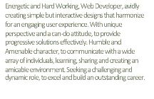

![Experience
Web Developer @ General Assembly June 2015 -> September 2015
¥ Mastered Technical Skills to develop Interactive and creative websites from scratch, without prior coding knowledge.
¥ Utilized JavaScript, HTML, CSS to create interactive Frontend with Node.js and Express as Backend technologies to perform CRUD operations and save Data in JSON format and SQLites3.
¥ Used AJAX to make web pages fast and dynamic.
¥ Build MVC based applications with Ruby on Rails frame work and connecting it to PostgreSQL server.
¥ Designed visually interesting and responsive user interfaces with Bootstrap.
¥ Testing, Debugging and troubleshooting applications.
¥ Developed soft-skills such as communicating effectively with team mates, taking right decision as a leader, adapting in any situation and using my unique perspective to solve problems creatively in an AGILE environment.
iOS Developer @ Fresh Digital Group Dec 2015-> Feb 2016
¥ Regularly Updated content and functionality of the Company Website, using JavaScript, HTML/CSS.
¥ Creating and editing images using Photoshop and illustrator.
¥ Prototyping iOS Apps in XCODE, as well as manual testing apps made for iPhone and Apple Watch.
¥ Designing and Editing 3D models in Rhino and printing them using New Matter 3D Printer.
.Net Training (Self- Study- Group) Sep 2016->Nov 2016
¥ Hands-on experience developing N-Tier web applications in .NET framework, using C#.NET, ASP.NET, ADO.NET, ENTITY FRAMEWORK.
¥ Designed User Interface using ASP.NET, JavaScript, CSS, HTML.
¥ Data modelling and data manipulating in MSSQL.
¥ Implemented MVC pattern for design solutions.
¥ Enhanced user experience with AJAX.
Skills
JavaScript, HTML, CSS, NODE.JS, Ruby on Rails, Express, AJAX, Bootstrap, C#, .NET, SQL, MSSQL Server, GIT, GITHUB, Angular.JS, Photoshop, MVC.
Education
B.A in History - R.D National College June 2001 -> May 2004
M.A in History - University of Mumbai June 2004 ->May 2006](resume_2017.fld/image008.png)